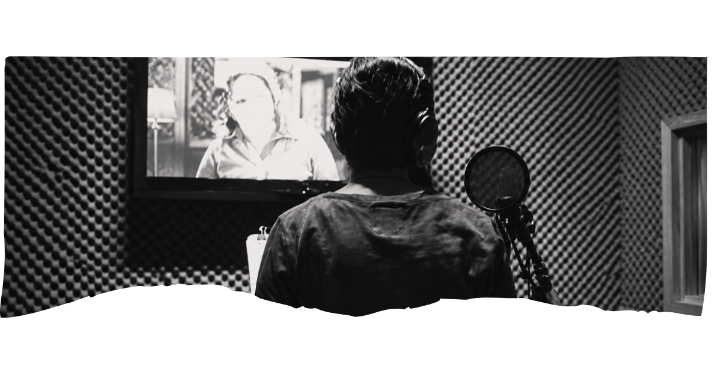

Sobre mim
Sou atriz e dubladora, com uma trajetória artística que começou ainda na infância, passando pela dança, pelo teatro e pela interpretação. Ao longo dos anos, participei de peças, musicais, apresentações e performances, experiências que contribuíram para o desenvolvimento da minha expressão corporal, vocal e artística.
Meu interesse pela dublagem começou em 2013, quando tive meu primeiro contato com a área por meio de aulas livres, e se fortaleceu com novas experiências e estudos em interpretação para voz. Atualmente, direciono meu trabalho especialmente para a atuação e a dublagem, explorando diferentes personagens, emoções e possibilidades através da voz.

Formação
Outras formações artísticas
Idiomas
Samples de voz
Ouça alguns samples de voz em diferentes estilos e personagens